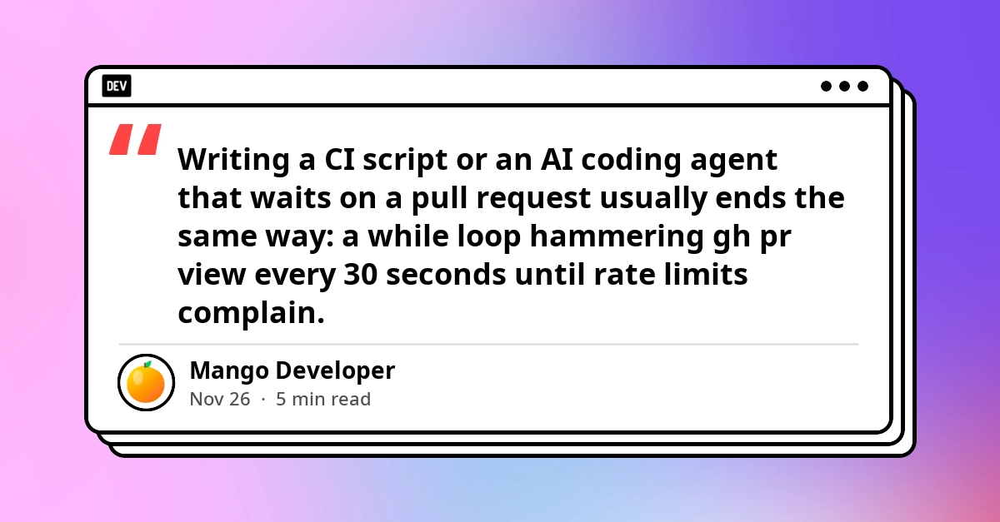
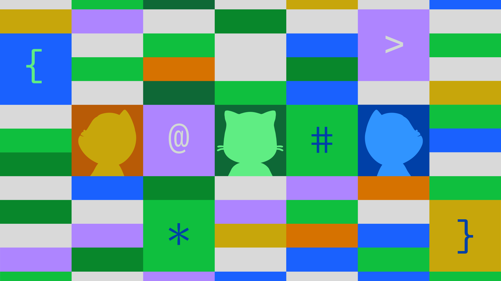
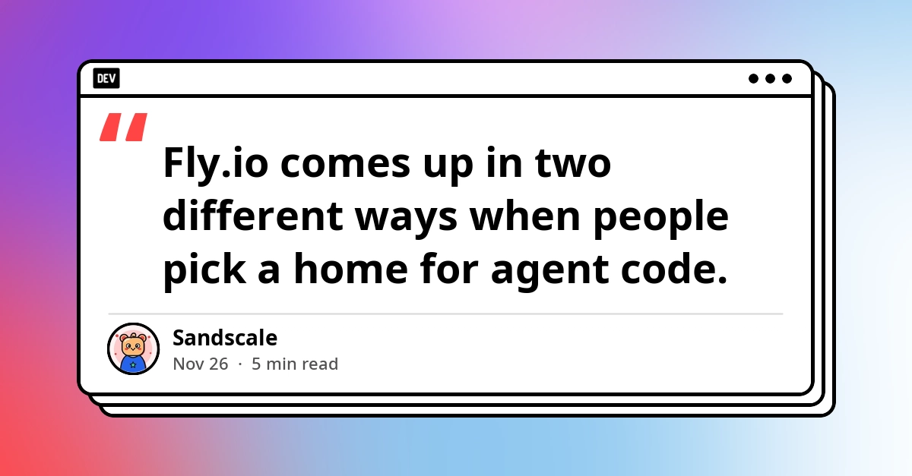
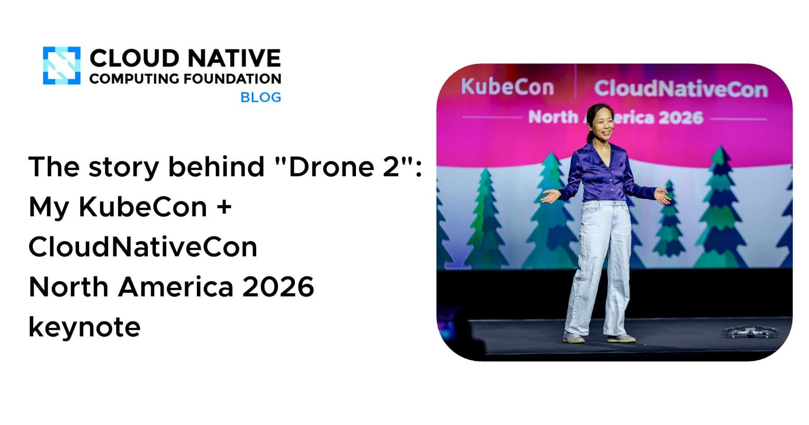
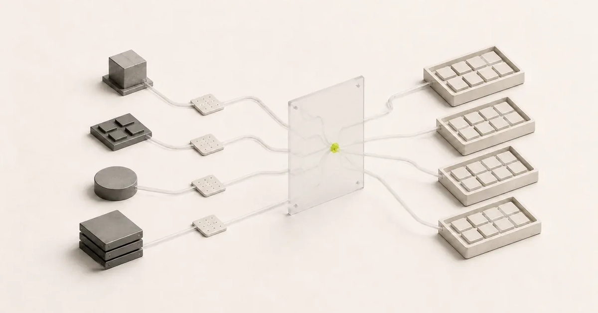
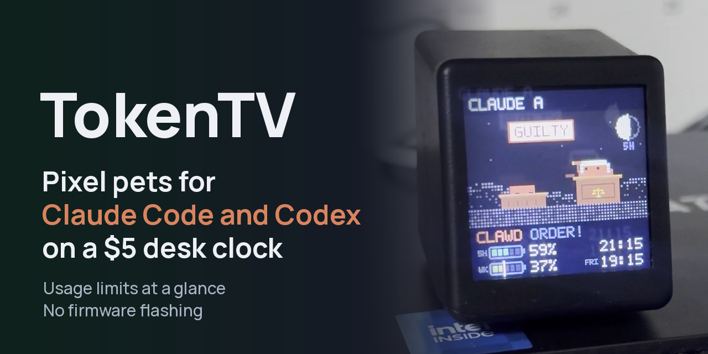
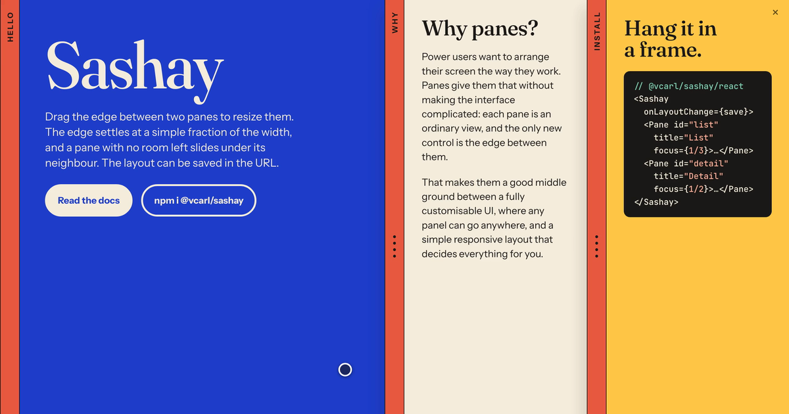
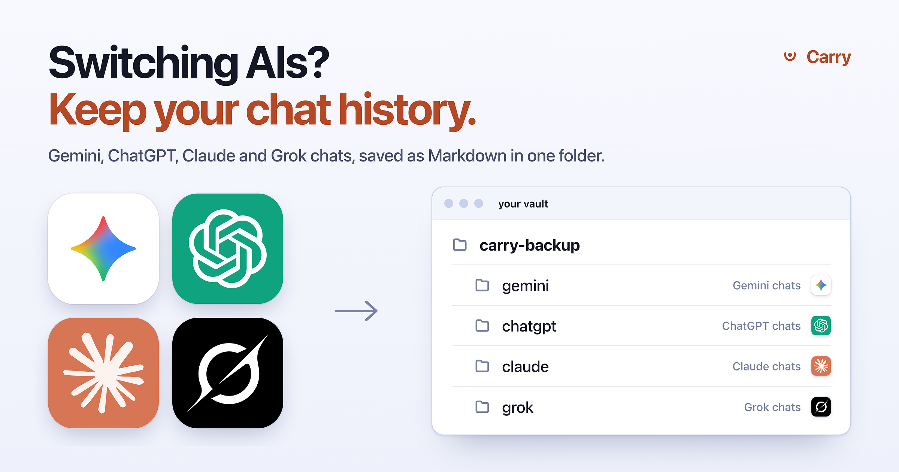

🔥 Top 3 (must read)
GitHub CLI v2.105.0 Replaces Polling Loops With Event Streams and Team Copilot Defaults
GitHub CLI can now wait for pull request events. CI scripts and AI coding agents no longer need a
while loop that runs gh pr view every 30 seconds until they hit rate limits. The same release also adds team-level Copilot defaults, so new team members need less repeated setup. Why it matters: It removes slow polling from your CI pipelines and agent workflows, and it makes Copilot onboarding easier for your team.
Ship It Conversations: Moving Kafka to EKS at Honeycomb, Six Cluster Cutovers, and Why the Hardest Part Wasn't Technical
Josh Parsons from Honeycomb led the move from self-hosted Confluent Platform and ZooKeeper on EC2 to open-source Kafka in KRaft mode on EKS, run with Strimzi. They moved six clusters, each in two to four hours, while Kafka sat in the path of every customer event. Why it matters: It is a real Kubernetes migration case study, and it also covers the people and process side that an EM has to plan for.
R
How to choose the next safe step in application modernization
GitHub shows how to assess a legacy app and pick one small, bounded modernization step instead of a big rewrite. It then packages the method as a GitHub Copilot agent skill, so the team can reuse it. Why it matters: It is a repeatable way to let an AI agent help with legacy code without risky large changes.

🛠 Tools & releases
Flutter Dark Mode: ThemeMode Done Right
: a guide to dark mode with
ThemeMode. It shows common mistakes, like hardcoded white containers and a forgotten status bar color.🤖 AI for developers
GitHub CLI event streams + team Copilot defaults
: agents that wait on PRs can now listen for events instead of polling.
Sandscale vs Fly Machines and Sprites
: compares three ways to run agent code or untrusted code: a general VM API, a persistent agent computer, or a sandbox for each run. Note that a vendor wrote it.

The story behind "Drone 2" (KubeCon NA 2026 keynote)
: AI agents on Kubernetes, using agent-substrate and kagent.

👔 Engineering & teams
Migrating Our Messages API to Rust
: Anthropic writes about moving its Messages API to Rust. It is a production API migration case study.

Allocate AI API Cost by Team and Workload
: how to split AI API spend by team and by workload. It covers success signals, failure states and rollback conditions before rollout.

Honeycomb's Kafka-to-EKS move
: the title says the hardest part was not technical. That makes it useful for planning migrations as a team.
R
🎯 For me
GitHub CLI PR event wait
CI and agents: use the to replace polling loops in pipelines and agent scripts.
ThemeMode done right
Flutter: can serve as a quick dark-mode checklist for your app.
Kafka on EKS with Strimzi at Honeycomb
Infra and EM: covers six cluster cutovers and the non-technical side of the work.
R
Copilot agent skill for safe modernization steps
AI adoption: gives the team a reusable process for legacy code.
💡 App ideas & indie builds
Old Nvidia and ATI tech demos, running again in the browser
(HN, 340 points): classic GPU tech demos that you can no longer run easily on modern machines, now running in a browser. Inspiration: bringing old software that people miss back to the web is a strong hook for nostalgia.
G
Desk Clawd pet from a $5 AliExpress clock (+usage)
(HN): a cheap clock turned into a desk pet, and the title says it also shows usage. Inspiration: a small physical display for a number you check often, like AI usage, is a fun weekend build.

Sashay: sliding-panes React UI library
(HN): a sliding-panes navigation pattern for React, inspired by WebOS Enyo. Inspiration: old UI patterns from dead platforms can become fresh libraries today.

Carry
(HN, 18 comments): saves every AI conversation as Markdown in a folder you own. It fixes the problem of chats being locked inside each AI vendor's app. Inspiration: "own your data as plain files" is a simple pitch with clear value.

U.S. Interstate Weather
(HN): shows weather along U.S. interstate highways, which helps drivers plan a road trip. Inspiration: taking public data and showing it for one specific use case, like a route instead of a city, makes a useful niche product.
I
🎓 Try this
Find one CI script or agent workflow that polls a PR in a loop with
gh pr view. Update to GitHub CLI v2.105.0 and replace that loop with the new PR event wait. See the GitHub changelog for the exact usage.